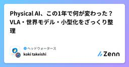
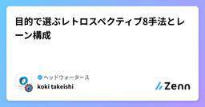
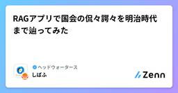
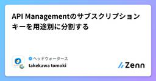
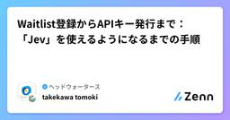

ヘッドウォータースのフィード
フィード

Azure API Management で 2 つの Microsoft Foundry に負荷分散してみる
ヘッドウォータースのフィード
執筆日2026/9/26 はじめにAzure OpenAI（Microsoft Foundry Models）を本番で使っていると、どこかで 429 Too Many Requests にぶつかります。対策の定番は、Azure API Management（以下 APIM）を前段に置き、複数の Foundry リソースに負荷分散する構成です。この記事では、1 つのサブスクリプションの中に Foundry リソースを 2 つ作り、同じモデルをデプロイして、APIM のバックエンドプールで負荷分散するところまでを検証します。本来は別々のサブスクリプションに Foundry...
11時間前

モデルの重みは触らず"仕事のやり方"だけを自動進化させる AutoDesign を読んで、LangGraphでミニ実装してみた
ヘッドウォータースのフィード
この記事で学べることAutoDesignは、LLM本体は一切触らずharness(仕事のやり方)だけを自動改善する、エージェント設計の新しい手法です。論文をポスターに変換するタスクで、商用ツールのClaude Designを7.45点上回るスコアを達成しています。仕組みは2つのループです。Inner Loopが生成と検証と修正を繰り返し、Outer Loopがharnessそのものを更新します。Outer LoopにはAcceptance Gateという過学習防止の仕組みも入っています。LangGraphでこの構造だけを抜き出したミニ版を作りました。シングル処理とDesig...
1日前

Physical AI、この1年で何が変わった？ VLA・世界モデル・小型化をざっくり整理
ヘッドウォータースのフィード
ロボットが洗濯物をたたんだり、コーヒーをいれたり。Physical AI関連の動画を見ていると、「本当にできるのかな？」「2年後には一家に一台とかあるかも、、でもスペースがなー」「成田ユウスケの弟のしまえるやついいなー」とか思っています。技術的な進化を追うと、SLM、VLA、世界モデル、さらにWAM・・と、略語がどんどん増えます。今回は、2025年秋から2026年9月にかけての動きを、「何が変わってきたのか」中心にざっくり、簡単に整理した記事です。 まず、VLA・SLM・世界モデルは別の分類最初にここだけ整理しておくと、ニュースが読みやすくなります。用語ざっくり言うと...
2日前

目的で選ぶレトロスペクティブ8手法とレーン構成
ヘッドウォータースのフィード
レトロスペクティブで、毎回KPTを使っているチームは多いと思います。コミュニケーションを取る目的の場合、誰でもわかりやすいKPTは良いフレームワークだと思います。一方で、「PJの開始で特にKPTがない」「新しい技術を試したのに学びが残らない」「議題が多く、話すことを決めるだけで時間が終わる」といった場面もあるかと。そんなとき、今回の振り返りで何を確かめたいかを決め、その問いに合う形式を選ぶとより良い議論ができるのかなと思い、どんな手法があるかリサーチしてみました。この記事では、KPT＋Actionを基本形として、8つの手法のレーン構成と使いどころを紹介します。ここでいう「レーン」...
2日前

RAGアプリで国会の侃々諤々を明治時代まで辿ってみた
ヘッドウォータースのフィード
背景話題になった制度や政策について、「これはどういう経緯を辿って今に至ったのか」を知りたいと思うことがあります。そこで、あえて単純化しすぎず、一次情報をベースに丁寧に追うことに特化した、国会の会議録を横断検索・分析できるRAGアプリを作りました。全体的な数値より局所的な文脈を追うことにこだわった分析ツールです。 アプリ概要キーワードを1つ入力すると、そのキーワードにまつわる国会論戦を検索&分析できます。国会会議録の検索対象は1947年以降がメインですが、任意で帝国議会(1890〜1947年)まで遡って検索することも可能です。たとえば「貴族」で調べてみると、戦前にか...
2日前

AI駆動開発でスクラムはどう変わる？短くなるサイクルとレトロの役割
ヘッドウォータースのフィード
https://echometerapp.com/en/ai-in-agile-software-development-community-survey/AI駆動開発でコードやテストを素早く作れるようになると、感覚的にスクラムの進め方も変わると思います。https://scrumexpansion.org/ai-and-scrum/新しい手法やデイリーの廃止なんていう記事もありますが、個人的には各チームでAIの使い方、人とAIの分担、レビュー、品質確認の仕組みなどの変化に対応していくことが大事で、デイリーやレトロスペクティブによるコミュニケーションの重要性が増したと感じます。...
2日前

API Managementのサブスクリプションキーを用途別に分割する
ヘッドウォータースのフィード
執筆日2026/9/23 まずAPI Managementを使いAPIの管理を今後していこうと思っています。その際に、サブスクリプションキーで認証をしています。その際に、Build-in-all-access-subscriptionの主キーで認証をしています。ただ、今後APIが増えてきた際に、全てのAPIに対して同じサブスクリプションキーを使いたくないなと思っています。分けたいです。 分ける方法はあるのか？ある 分ける方法API Managementを開くAPIs>サブスクリプションを開く+サブスクリプションの追加をクリックスコー...
4日前

オントロジー付き評価システムの効果を推定してみる
ヘッドウォータースのフィード
エンジニアの評価を、AIで効率化したい。評価原文、プロジェクトの成果物、GitHubリポジトリ、勉強会や横断活動の記録を集めれば、自己評価やPM評価の下書きは作れそうです。さらに、それらをオントロジーで結びつければ、根拠も追えるようになるはずです。では、評価業務全体の時間はどれくらい減るのでしょうか。根拠が付けば、評点も正しくなるのでしょうか。ヘッドウォータースのエンジニア評価業務を想定して、根拠登録・スキルオントロジー・人による承認を備えた評価アプリを試作し、検証しました。!この記事は、2026年9月21日時点のローカル試作・架空データによる検証・工数モデルの記録です。ヘッ...
4日前

Waitlist登録からAPIキー発行まで：「Jev」を使えるようになるまでの手順
ヘッドウォータースのフィード
執筆日2026/9/19 Jevとは？Jev は TypeSafe AI が 2026年9月15日に早期アクセスで公開した System One Model という新カテゴリのモデルで、ソフトウェアが直接利用できる高速・構造化された判断を返すことに特化しているモデルです。テキスト生成を行わず、型付きの question を state に対して評価し、構造化された結果を直接返します。パース不要で、コードが分岐・ソート・ルーティングに使える型付き値と確率分布が得られます。質問プリミティブは3種類あります。Choice（リストから1つ選ぶ／choice・probabilit...
7日前
【Zenn力執筆】#12 Rewriteしないと？！
ヘッドウォータースのフィード
はじめにゲームで遊んでいたときに、この技、意味あるのか？と思っていた少年時代の私は、「見る」ということを理解できていなかったのかもしれません。皆さんはポケモンの「みやぶる」という技を知っていますか。「みやぶる」は、相手の回避率に関係なく攻撃が当たるようになり、本来は攻撃が通らないゴーストタイプにも、ノーマルタイプやかくとうタイプの技が当たるようになる技です。子どもの頃の私は、攻撃すればいいのでは？と思っていました。わざわざ1ターン使ってまで相手を「みやぶる」意味が分からなかったのです。しかし今振り返ると、「みやぶる」という技は単なる補助技ではありません...
9日前
【Zenn力執筆】#11 もし私がCopilotならプレミアリーグのスタッツをどう作るだろうか
ヘッドウォータースのフィード
はじめに皆さんは占いは好きですか。古くからある占いとして血液型占いがあります。よく言われるのは、A型は几帳面B型はマイペースO型は大雑把AB型は変わり者などでしょうか。ちなみにO型の私からすると、大雑把扱いされるのはあまり納得していません笑なお、血液型と性格の関係に科学的根拠はないとされています（切実）！！今回は血液型占いの記事ではないので深く触れませんが、気になる方は参考記事をご覧ください。https://www.hiro-clinic.or.jp/gene/abopersonalities/ところで、この「血液型」という言葉を聞いたときに私は別の...
9日前
Unity CatalogのデータをOneLakeに保存する（Azure Databricks Storage）
ヘッドウォータースのフィード
Azure Databricks StorageとはFabric のテナント設定には 「ユーザーは、ストレージに OneLake を使用する Azure Databricks のストレージ項目を作成できます」 という項目があります。これは、Azure Databricks の Unity Catalog が、マネージドテーブルの保存先として Fabric の OneLake を使えるようにするための項目です。ドキュメント上は「Azure Databricks 向けの OneLake を基盤としたストレージ アイテム」と定義されています。https://learn.micros...
10日前
Presidio で個人情報（PII）の検出とマスキングをやってみる
ヘッドウォータースのフィード
執筆日2026/9/16 はじめにAIエージェントの開発をしています。その際にログをDBに保存する際に個人情報含むセンシティブな情報をマスキングしたいなと。Azure Languageを使って実装していますが、他に手段はないかを調査していました。その際に、Presidioを見つけました。どのようなものなのか気になったので調査しようかなと。https://github.com/data-privacy-stack/presidio やってみる 1. 環境構築仮想環境を作ってインストールします。python -m venv .venvsource .venv/b...
11日前
金融時系列の変化点検出を自己進化させるLLMエージェント「EvoTS-Agent」を解説
ヘッドウォータースのフィード
はじめに：LLMエージェントが同じ改善を繰り返してしまう理由LLMエージェントにコードを書かせて何かを最適化させるとき、こんな経験はないでしょうか。一度目の提案は良かったのに、二度目・三度目の「改善」でむしろスコアが下がる何度指示しても、同じアプローチを微修正するだけで根本的に違う方法を試してくれない複数回の試行錯誤の結果、良かったアイデアと悪かったアイデアがバラバラのまま、うまく統合されないこれはまさに、株価や信用スプレッドといった金融時系列データの「構造変化（レジームチェンジ）」を自動検出するAIエージェントが抱えていた課題そのものです。2026年8月に公開された...
11日前
アナログ派のDB初心者が2日でDP900に受かった 赤シート×Claude勉強法
ヘッドウォータースのフィード
前談AI分野の技術躍進すさまじく、デジタル化なんて当たり前のこのご時世、趣味で紙の辞書を引きつづけている者です。(子どもの頃からの習慣でかなり慣れているので、意外とウェブやAIでいちいち検索するより辞書引くほうが楽だったりします)もちろん書籍もだんぜん"紙派"。電子だとなんだか、私の場合、忘却曲線の傾きが大きいといいますか、数ヶ月後、数年後にぜんぜん頭に残らないのです。そんなアナログ派の私ですが、AI活用も大好きです。とくにClaudeが好きで、休日朝から晩までClaudeとやりとりしている日もザラにありますし、QOLを上げるための普段使いスキルをいろいろ作って便利に暮らしてお...
12日前
localStorage は書き込んだ直後にはディスクに保存されていない
ヘッドウォータースのフィード
端末をキオスク化するときなど、ブラウザに設定値を持たせて、次の起動でそれを読ませたいことがある。端末ごとの識別子や画面の初期設定を、例えば localStorage に入れておく。この書き込みを手順書やスクリプトに落とすと、最後にブラウザを閉じる工程が付く。ここで強制終了を選ぶ手順は珍しくない。ウィンドウを閉じてもプロセスが残る場合があり、確実に終わらせたいからだ。taskkill /F /IM msedge.exeところが、設定値を書いた直後にこれを実行すると、値が残らないことがある。開発者ツールで値が入ったことを確かめてから閉じても、結果は変わらない。実際に手順を何度...
13日前
「自信満々に間違える」AIをどう直す？ログ異常検知のキャリブレーション問題とLoRD
ヘッドウォータースのフィード
はじめに「モデルの精度は99%です」と言われると安心してしまいますが、その99%の裏に「間違えたときほど自信満々」という危険な癖が隠れていたらどうでしょうか。今回紹介する論文 Too Sure to Be Safe: Model Calibration for Reliable Log Anomaly Detection（2026年8月, IEEE ICDM 2026採択）は、まさにこの問題を扱っています。サーバーの大量ログから異常を検知するAIモデルは、近年LLMベースのものも含めて高精度化が進んでいます。しかし著者らは、「異常を見逃した（＝異常なのに正常と判定した）ケースで...
18日前
App Service - Easy Auth を使い Azure AI Search をユーザーの権限で検索できる仕組みを作る
ヘッドウォータースのフィード
執筆日2026/9/6 はじめに以前、Azure API Management を中間層に置いて On-Behalf-Of フローを組み、Azure AI Search をユーザー本人の権限で検索する構成を試しました。しっかり作るならあの形が正解なのですが、「社内向けの小さな検索アプリを App Service に置きたいだけ」という場面では、APIM を一段挟むのはコスト面でうーん...だなと。https://zenn.dev/headwaters/articles/38fce08d61a07aそこで今回は、App Service の組み込み認証（Easy Auth）...
21日前
AppService にEasy Authを組み込む方法
ヘッドウォータースのフィード
執筆日2026/9/4 Easy Auth とはApp Service および Azure Functions に組み込まれている認証 (ユーザーのサインイン) と承認 (保護されたデータへのアクセス提供) の機能です。認証コードをほとんど、あるいはまったく書かずに、Web アプリ・REST API・モバイル バックエンド・関数にサインインを追加できます。対応している ID プロバイダーは、Microsoft Entra、Facebook、Google、X、GitHub、Apple (プレビュー)、および任意の OpenID Connect プロバイダーです。 必要な...
22日前
Entra Agent IDでAzureリソースに認証・アクセスする
ヘッドウォータースのフィード
Microsoft Foundry で発行される Entra Agent ID（エージェント専用のID）を使って、Azureリソース（Azure Blob Storage）に認証・アクセスできるかを検証しました。本記事では、その検証手順と結果をまとめます。 やることFoundry上にHosted Agent（Blobコンテナー一覧を取得するツールを持つエージェント）をデプロイし、以下の2点を確認します。ネガティブテスト: Agent IDにStorageのRBACロールを付与していない状態でBlobアクセスが拒否されることポジティブテスト: Agent IDに Stora...
25日前